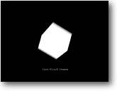

1. Preparação Objetivo: Preparar um simples
programa em Blitz3D |
 |
Blitz3D possui todos os comandos do Blitz2D, além dos comandos exclusivos para lidar com gráficos 3D. Isso facilita para quem já usou o Blitz2D, pois poderá usar muitos dos comandos já conhecidos.
Vamos dar uma olhada no nosso primeiro programa.
| Graphics3D 800,600 SetBuffer BackBuffer() camera=CreateCamera() CameraViewport camera,0,0,800,600 light=CreateLight() cube=CreateCube() PositionEntity cube,0,0,5 While Not KeyHit(1) TurnEntity cube,.1,.2,.3 UpdateWorld RenderWorld Text 320,500,"Primeiro programa em Blitz3D" Flip Wend End |
Execute o programa acima. Você verá um cubo 3D girando e uma mensagem. Nada mau para apenas 15 linhas de código.
Então, o que está acontecendo nesse programa? Vamos observar...
| Graphics3D 800,600 |
Talvez a linha mais importante do programa, essa instrução é responsável por inicializar o modo para exibição de gráficos 3D. Como você deve ter adivinhado eu estou estabelecendo uma resolução de tela de 800x600 pixels. Se você tiver problemas para rodar este exemplo, mude estes valores. (Nem todas as placas de vídeo suportam as mesmas resoluções)
| SetBuffer BackBuffer() |
Este comando é usado para "double buffering". Basicamente isso significa que enquanto uma tela é mostrada (front buffer) outra vai sendo desenhada (back buffer).
| camera=CreateCamera() CameraViewport camera,0,0,800,600 |
Estas instruções são responsáveis
pela câmera. A primeira cria uma câmera e a segunda estabelece toda
a tela como sendo a área visível da câmera.
Por que precisamos de uma camera? Porque é através dela que podemos
ver o que acontece no nosso mundo 3D. Podemos ter várias câmeras
em nosso programa. Por exemplo para simular um circuito interno de TV com câmeras
fixas em várias partes do cenário.
| light=CreateLight() |
Nós colocamos um ponto de luz com esse comando. Por padrão o Blitz3D já fornece uma luz, portanto esse comando não é realmente necessário.
| cube=CreateCube() |
Para criar nosso cubo eu usei um comando próprio do
Blitz3D, ao invés de criá-lo com um programa de modelagem.
NOTA: O Blitz3D contém uma série de comandos para criar
formas primitivas como cubo, esfera, cone e cilindro.
| PositionEntity cube,0,0,5 |
Por padrão as entidades são criadas no ponto 0,0,0 (x,y,z). Este comando posiciona entidades nas coordenadas desejadas - inclusive a câmera. Lembre-se que usando coordenadas negativas os objetos são movidos para o lado oposto. Por exemplo: PositionEntity cube,3,-2,7 vai posicionar o cubo 3 unidades para a direita, 2 unidades para cima e 7 unidade para o fundo (afastando).
Esse comando é usado mais frequentemente no início do programa para posicionar tudo nos devidos lugares.
| While Not KeyHit(1) |
O início do loop principal. Os comandos dentro do loop se repetirão enquanto a tecla ESC não for pressionada.
| TurnEntity cube,0.1,0.2,0.3 |
Este comando será muito usado em seus programas. Sua função é girar um objeto nos eixos x, y e z. Nesse caso x = 0.1, y = 0.2 e z = 0.3 (valores negativos fazem girar para o lado contrário).
Importante: Esse comando gira o objeto bem como seus eixos. Por exemplo, você criou um foguete apontado para cima e girou até que ele apontasse para baixo. O eixo y (vertical) agora está invertido. Isso fará mais sentido quando você estiver mais acostumado com o sistema de coordenadas.
| UpdateWorld RenderWorld |
O comando UpdateWorld atualiza as coordenadas das entidades
que se moveram, giraram, ou mudaram de tamanho e checa as colisões que
podem ter acontecido. Sem este comando seu mundo será estático.
O comando RenderWorld redesenha os objetos em suas posições atuais.
| Text 320,500,"Primeiro
programa em Blitz3D" Flip Wend End |
Esta última parte primeiramente imprime uma mensagem
na tela (deve ser feita em cada repetição do loop). Essa é
uma boa hora para desenhar qualquer coisa na tela usando comandos do Blitz2D.
O comando Flip troca o "front buffer" com o "back buffer",
fazendo aparecer na tela o que estava sendo desenhado no back buffer. O comando
Wend marca o fim do loop, e o comando End termina o programa (quando a tecla
ESC tiver sido pressionada).
É
isso aí! Chegamos ao fim de nosso primeiro programa
Tutorial 2 - Movimento e Rotação